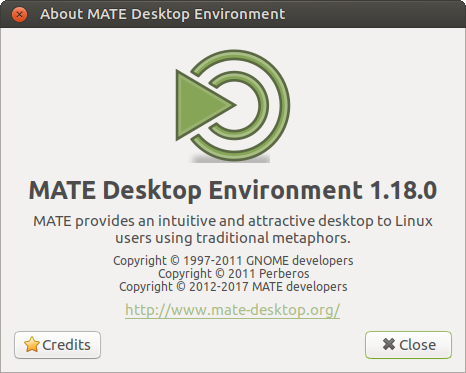

MATE 1.18 released
After 6 months of development the MATE Desktop team are proud to announce the release of MATE Desktop 1.18. We’d like to thank every MATE contributor for their help making this release possible.

What’s new in MATE 1.18
The release is focused on completing the migration to GTK3+ and adopting new technologies to replace some of deprecated components MATE Desktop 1.16 still relied on.
The headline changes in MATE Desktop 1.18 are:
-
The entire MATE Desktop suite of applications and components is now GTK3+ only!
- Requires GTK+ >= 3.14.
- All GTK2+ code has been dropped including the
--with-gtkbuild option.
- Completed the migration to
GtkApplicationfromlibunique. -
Added
libinputsupport for mouse and touchpad.- Separate settings for handedness (left/right-handed) and motion acceleration/threshold.
-
Much improved accessibility support (particularly for visually impaired users).
- Many thanks to our friends at Hypra.fr for their contribution!
-
Caja adds several new features including:
- Added a copy queue and copy pausing.
- Asking confirmation before moving files to the Trash.
- Support for back/forward mouse buttons for directory navigation.
- Notification when ejected drives are safe to unplug.
- Lock screen will load the users selected background instead of the system defined default.
- MATE Panel gets several improvements, including:
- Added desktop actions support for additional launch options.
- Added StatusNotifier support.
- Added support for Menulibre menu editor, if installed it is preferred over Mozo.
- Engrampa, the archive manager, includes a number of improvements:
- Added
earandwarto the supported types list. - Check the rar/unrar version to the correct date is shown.
- Fixed compress rar and 7z split into volumes.
- Added
- Notifications now implement action icons support, for example playback control icons used by media players.
- Reworked the font viewer to add font browsing mode, support for TTC fonts and expose it in the menus by default.
-
Replaced deprecated
upowersuspend/hibernate functions with ConsoleKit2 equivalents. - MATE Terminal adds the ability to close tabs with middle mouse button.
-
Atril, the document viewer, has much improved page load times and adds support for
unarchiverused by some comics. - Lots of deprecated GTK+ methods have been replaced and many bugs have been fixed.
- The plugin systems, and all C and Python plugins, in Eye of MATE and Pluma have been ported to
libpeas. - Translations are updated. Thank you to our team of translators!
- A number of memory leaks have been plugged.
-
A-n-d most exciting of all… MATE Calculator is back and has been ported to GTK3+
:-D
The various components of MATE Desktop 1.18 are available for download here:
Changelog
Here is a more detailed break down of what changed.
mate-common 1.18.0
- NEWS: use consistent, project wide, markdown-like formatting to make generating release announcements easier
mate-desktop 1.18.0
- NEWS: use consistent, project wide, markdown-like formatting to make generating release announcements easier
- Move to GTK+3 (require GTK+ >= 3.14), drop GTK+2 code and —with-gtk build option
- Drop mpaste tool (won’t work without the website anyway)
- Background: fix crossfade issues with recent GTK+ versions
- Background: fix more graphics issues to allow Caja to use background for directory windows
- Background: fix memleaks and other misc issues
- Color select: fix some GTK+ deprecations
- Schemas: some fixes and cleanups
- mate-about: update copyright year
- mate-about: fix URL centering
- Translations update
mate-user-guide 1.18.0
- NEWS: use consistent, project wide, markdown-like formatting to make generating release announcements easier
- Translations update
libmatekbd 1.18.0
- NEWS: use consistent, project wide, markdown-like formatting to make generating release announcements easier
- Move to GTK+3 (require GTK+ >= 3.14), drop GTK+2 code and —with-gtk build option
- Translations update
libmatemixer 1.18.0
- NEWS: use consistent, project wide, markdown-like formatting to make generating release announcements easier
- Translations update
libmateweather 1.18.0
- NEWS: use consistent, project wide, markdown-like formatting to make generating release announcements easier
- Move to GTK+3 (require GTK+ >= 3.14), drop GTK+2 code and —with-gtk build option
- Drop Python bindings and —enable-python build option (won’t work with GTK+3)
- Locations: add Dunedin, New Zealand
- Locations: add Yogyakarta, Indonesia
- Locations: move Indonesia under Asia region
- Locations: correct coordinates for Pune, India
- Translations update
mate-icon-theme 1.18.0
- Translations update
caja 1.18.0
- NEWS: use consistent, project wide, markdown-like formatting to make generating release announcements easier
- Build: require libmate-desktop >= 1.17.3
- Move to GTK+3 (require GTK+ >= 3.14), drop GTK+2 code and —with-gtk build option
- Port from libunique to GtkApplication
- Implement copy queue and pausing
- Add option for asking confirmation before moving files to trash
- Add support for back/forward mouse buttons for directory navigation
- Add notification when ejected drives are safe to unplug (and require libnotify at build time)
- Add —force-desktop command line option to make Caja always manage the desktop
- Add ability to get feedback from Orca when additional icons are selected/deselected
- Drop metadata converting tool
- Fix crossfade issues with recent GTK+ versions
- Fix more graphics issues to allow Caja to use background for directory windows
- Fix some more GTK+ deprecations and runtime warnings
- Schema: some fixes and cleanups
- Translations update
mate-polkit 1.18.0
- NEWS: use consistent, project wide, markdown-like formatting to make generating release announcements easier
- Fix some GTK+ deprecations
- Translations update
marco 1.18.0
- NEWS: use consistent, project wide, markdown-like formatting to make generating release announcements easier
- Move to GTK+3 (require GTK+ >= 3.14), drop GTK+2 code and —with-gtk build option
- Theme viewer: fix build for GTK+3 and fix some GTK+ deprecations
- Add ability to disable showing preselected window border on alt-tab
- Add ability to ignore applications when show-desktop is triggered
- Schema: make compositing on by default
- Workspaces: switch wrapping behavior for ‘classic’ and ‘toroidal’ modes (it was reversed somehow)
- Translations update
mate-settings-daemon 1.18.0
- NEWS: use consistent, project wide, markdown-like formatting to make generating release announcements easier
- Build: require XInput unconditionally
- Build: require libmatemixer >= 1.10, libxklavier >= 5.2, dconf >= 0.13
- Build: require libmatekbd and libmate-desktop >= 1.17
- Move to GTK+3 (require GTK+ >= 3.14), drop GTK+2 code and —with-gtk build option
- Add libinput support for mouse and touchpad
- Touchpad: add separate settings for handedness (left/right-handed) and motion acceleration/threshold
- Background: restore option to let Caja draw background with GTK+ 3.22
- Some fixes and cleanups
- Translations update
mate-session-manager 1.18.0
- NEWS: use consistent, project wide, markdown-like formatting to make generating release announcements easier
- Replace deprecated upower suspend/hibernate functions with ConsoleKit2 equivalents (and drop —enable-upower build option)
- Translations update
mate-menus 1.18.0
- NEWS: use consistent, project wide, markdown-like formatting to make generating release announcements easier
- Translations update
mate-panel 1.18.0
- NEWS: use consistent, project wide, markdown-like formatting to make generating release announcements easier
- Build: require libmate-menu >= 1.10 and dconf >= 0.13.4
- Build: require libmateweather and libmate-desktop >= 1.17
- Move to GTK+3 (require GTK+ >= 3.14), drop GTK+2 code and —with-gtk build option
- Launchers: add desktop actions support for additional launch options
- Menu applets: add support for Menulibre menu editor, and prefer it to Mozo if both are installed
- Notification area: add StatusNotifier support
- Fix lots of GTK+ deprecations and runtime warnings
- Don’t spam accessible name changes when it is translated
- Some code cleanups
- Translations update
mate-backgrounds 1.18.0
- Translations update
mate-notification-daemon 1.18.0
- NEWS: use consistent, project wide, markdown-like formatting to make generating release announcements easier
- Implement action icons support (e.g. playback control icons used by media players)
- Themes: fix some pie countdown issues
- Translations update
mate-control-center 1.18.0
- NEWS: use consistent, project wide, markdown-like formatting to make generating release announcements easier
- Build: require libmatekbd, libmate-desktop, marco, m-s-d >= 1.17
- Build: require XCursor and XInput unconditionally
- Move to GTK+3 (require GTK+ >= 3.14), drop GTK+2 code and —with-gtk build option
- Port from libunique to GtkApplication
- Rework font-viewer: add font browsing mode, support for TTC fonts, and make it appear in the menus
- Add libinput support for mouse and touchpad
- Mouse: add separate touchpad motion settings on touchpad tab
- Mouse: change tab label from General to Mouse
- Mouse: change natural scroll mnemonic from ‘a’ to ‘n’
- Fix lots of GTK+ deprecations
- Some more fixes and cleanups
- Translations update
mate-screensaver 1.18.0
- NEWS: use consistent, project wide, markdown-like formatting to make generating release announcements easier
- Build: require libmate-menu >= 1.10
- Build: require libmatekbd and libmate-desktop >= 1.17
- Move to GTK+3 (require GTK+ >= 3.14), drop GTK+2 code and —with-gtk build option
- Lock screen: load user’s background instead of system one
- Preferences: fix some GTK+ deprecations
- Translations update
mate-media 1.18.0
- NEWS: use consistent, project wide, markdown-like formatting to make generating release announcements easier
- Build: require libmatemixer >= 1.10 and libmate-desktop >= 1.17
- Move to GTK+3 (require GTK+ >= 3.14), drop GTK+2 code and —with-gtk build option
- Port from libunique to GApplication and GtkApplication
- Some cleanups
- Translations update
mate-power-manager 1.18.0
- NEWS: use consistent, project wide, markdown-like formatting to make generating release announcements easier
- Build: require xproto >= 7.0.15
- Build: require mate-panel >= 1.17
- Move to GTK+3 (require GTK+ >= 3.14), drop GTK+2 code and —with-gtk build option
- Replace deprecated upower suspend/hibernate functions with ConsoleKit2 equivalents
- Use manpages as is instead of generating them from sgml (and don’t require docbook2man for build anymore)
- Some more fixes and cleanups
- Translations update
mate-system-monitor 1.18.0
- NEWS: use consistent, project wide, markdown-like formatting to make generating release announcements easier
- Add
pkexecsupport for usingkillandreniceon other users’ processes and try using it before tryinggksu - Fix some GTK+ deprecations
- Translations update
atril 1.18.0
- NEWS: use consistent, project wide, markdown-like formatting to make generating release announcements easier
- Build: require caja >= 1.17.1
- Move to GTK+3 (require GTK+ >= 3.14), drop GTK+2 code and —with-gtk build option
- [comics] add support for unarchiver (unar and lsar)
- [libview] increase page cache size to reduce number of page reloads
- Remove metadata migration code
- Force X11 backend
- Fix lots of GTK+ deprecations
- Fix some a11y issues
- Some more fixes and cleanups
- Translations update
caja-dropbox 1.18.0
- NEWS: use consistent, project wide, markdown-like formatting to make generating release announcements easier
- Build: require libcaja-extension 1.17.1 and GLib 2.36
caja-extensions 1.18.0
- NEWS: use consistent, project wide, markdown-like formatting to make generating release announcements easier
- Build: require caja >= 1.17.1 and libmate-desktop >= 1.17.0
- Move to GTK+3 (require GTK+ >= 3.14), drop GTK+2 code and —with-gtk build option
- Add xattr-tags extension to show xattr tags in a new column
- Translations update
engrampa 1.18.0
- check the rar/unrar version to work the new date style with all versions
- Fix: rar file listing now shows correct date with recent binary
- Fix: open the 7z first split volume after compress
- Fix typo in NEWS: engrampa instead engramp
- Fix: compress rar split into volumes
- Fix: compress 7z split into volumes
- build: remove option that disables deprecated stuff
- zip: added ear and war to the supported types list
- Update engrampa NEWS to use consistent, project wide, markdown-like formatting.
- Build: require Caja >= 1.17.1 to build against GTK+3 version of libcaja-extension
- tar: add support for pixz for .tar.xz files
- tar: add support for lbzip2 on .tar.bz2 files
- lha: add support for Amiga files
- Some corrections in GSettings schema
- Translations update
eom 1.18.0
- NEWS: use consistent, project wide, markdown-like formatting to make generating release announcements easier
- Build: require libmate-desktop >= 1.17
- Move to GTK+3 (require GTK+ >= 3.14), drop GTK+2 code and —with-gtk build option
- Drop Python bindings and —enable-python build option
- Port plugin system and plugins to libpeas
- Some code and docs cleanups
- Translations update
mate-applets 1.18.0
- NEWS: use consistent, project wide, markdown-like formatting to make generating release announcements easier
- Build: require libmateweather and mate-panel >= 1.17
- Move to GTK+3 (require GTK+ >= 3.14), drop GTK+2 code and —with-gtk build option
- Weather: fix temperature label placement
- Weather: show proper help section for each tab of prefs dialog
- Fix some GTK+ deprecations and runtime warnings
- Some code cleanups
- Translations update
mate-calc 1.18.0
- Add AppData.
mate-icon-theme-faenza 1.18.0
- Bump version
mate-indicator-applet 1.18.0
- NEWS: use consistent, project wide, markdown-like formatting to make generating release announcements easier
- Build: show new style indicator support status in summary
- Build: require mate-panel >= 1.17
- Move to GTK+3 (require GTK+ >= 3.14), drop GTK+2 code and —with-gtk build option
- Translations update
mate-netbook 1.18.0
- NEWS: use consistent, project wide, markdown-like formatting to make generating release announcements easier
- Build: require mate-panel >= 1.17
- Move to GTK+3 (require GTK+ >= 3.14), drop GTK+2 code and —with-gtk build option
- Translations update
mate-sensors-applet 1.18.0
- NEWS: use consistent, project wide, markdown-like formatting to make generating release announcements easier
- Build: require mate-panel >= 1.17
- Move to GTK+3 (require GTK+ >= 3.14), drop GTK+2 code and —with-gtk build option
- Fix some GTK+ deprecations
- Some more fixes and cleanups
- Translations update
mate-terminal 1.18.0
- NEWS: use consistent, project wide, markdown-like formatting to make generating release announcements easier
- Add ability to close tabs with middle mouse button
- Translations update
mate-user-share 1.18.0
- NEWS: use consistent, project wide, markdown-like formatting to make generating release announcements easier
- Build: require caja >= 1.17.1
- Move to GTK+3 (require GTK+ >= 3.14), drop GTK+2 code and —with-gtk build option
mate-utils 1.18.0
- NEWS: use consistent, project wide, markdown-like formatting to make generating release announcements easier
- Build: require mate-panel >= 1.17
- Move to GTK+3 (require GTK+ >= 3.14), drop GTK+2 code and —with-gtk build option
- Fix occasional distcheck breakage
- Some code cleanups
- Translations update
mozo 1.18.0
- NEWS: use consistent, project wide, markdown-like formatting to make generating release announcements easier
- Translations update
pluma 1.18.0
- NEWS: use consistent, project wide, markdown-like formatting to make generating release announcements easier
- Move to GTK+3 (require GTK+ >= 3.14), drop GTK+2 code and —with-gtk build option
- Build: actually build GObject introspection data
- Build: remove —enable-deprecations option - it actually disabled all deprecated stuff
- Add ability to search/replace text using regular expressions
- Drop Python bindings and —enable-python build option
- Port plugin system and both C and Python plugins to libpeas
- Snippets plugin: stop exposing functions on Pluma message bus (doesn’t work with GObject introspection)
- Snippets plugin: fix snippet parts staying after Ctrl-Z
- Fix unexpected closing of the first tab with middle-click under the line numbers column
- Fix some runtime warnings in plugins
- Some more fixes and cleanups in code and docs
- Translations update
python-caja 1.18.0
- Translations update
- support GTK+3 only: require Caja 1.17.1 and pygobject-3.0
- drop ancient check for Python 2.5, not needed these days